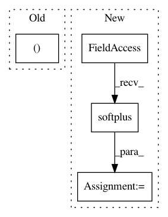

8df47901fbae1c93bcec58a9a658a6a3ad9f5d07,pymc3/variational/flows.py,PlanarFlow,make_uw,#PlanarFlow#Any#Any#,248
Before Change
// --> reparametrize
// u" : dx1
// w : dx1
wu = w.T.dot(u).reshape(()) // .
mwu = -1. + tt.nnet.softplus(wu) // .
// dx1 + (1x1 - 1x1) * dx1 / .
u_h = u+(mwu-wu) * w/((w**2).sum()+1e-10)
After Change
// u_ : bxd
// w_ : bxd
wu = (u*w).sum(-1, keepdims=True) // bx-
mwu = -1. + tt.nnet.softplus(wu) // bx-
// bxd + (bx- - bx-) * bxd / bx- = bxd
u_h = (
u
In pattern: SUPERPATTERN
Frequency: 3
Non-data size: 4
Instances
Project Name: pymc-devs/pymc3
Commit Name: 8df47901fbae1c93bcec58a9a658a6a3ad9f5d07
Time: 2017-09-02
Author: maxim.v.kochurov@gmail.com
File Name: pymc3/variational/flows.py
Class Name: PlanarFlow
Method Name: make_uw
Project Name: mozilla/TTS
Commit Name: adf9ebd629abc21e0969db2a1c29f389b5301c9d
Time: 2019-11-12
Author: egolge@mozilla.com
File Name: layers/common_layers.py
Class Name: GravesAttention
Method Name: forward
Project Name: reinforceio/tensorforce
Commit Name: 9a6ddf241ca2563917d35ac3c3e14a1e264f550e
Time: 2017-08-13
Author: mi.schaarschmidt@gmail.com
File Name: tensorforce/core/distributions/beta.py
Class Name: Beta
Method Name: create_tf_operations